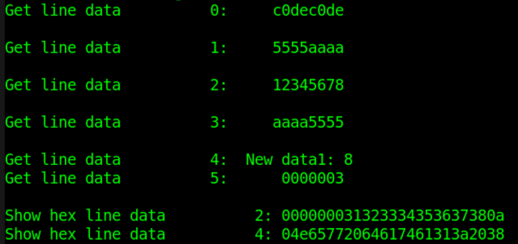
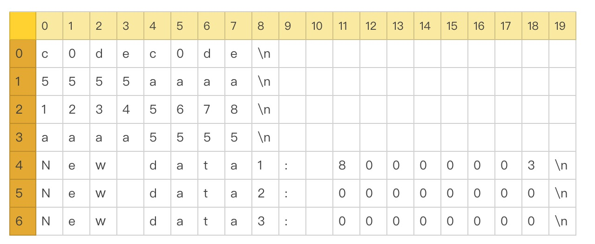

Verilog provides many system tasks that can operate on files. The commonly used system tasks mainly include:
- File open/close: $fopen, $fclose, $ferror
- File writing: $fdisplay, $fwrite, $fstrobe, $fmonitor
- String writing: $sformat, $swrite
- File reading: $fgetc, $fgets, $fscanf, $fread
- File positioning: $fseek, $ftell, $feof, $frewind
- Memory loading: $readmemh, $readmemb
When using file operation tasks (especially paying attention to $sforamt, $gets, $sscanf, etc.) to operate on files, you need to determine which system task to use based on the file nature and variable content, and ensure the consistency of parameters and the types of read/write variables with the file content. Do not confuse string types with multi-radix types.
File Open/Close
| System Task | Call Format | Task Description |
|---|---|---|
| File Open | fd = $fopen("fname", mode) ; | fname is the name of the file to open fd is the returned 32-bit file descriptor --- When opened correctly, fd is non-zero --- When an error occurs during opening, fd is zero mode is used to specify the file opening mode |
| File Close | $fclose(fd) ; | Close the corresponding file described by fd |
| File Error | err = $ferror(fd, str) ; | When the file is opened normally: --- both err and str are zero, When an error occurs while opening the file: --- err returns a non-zero value to indicate an error --- str returns a non-zero value storing the error type --- The official recommendation is that str length is 640 bits wide |
Example code is as follows:
Example
integer fd1, fd2 ;
integer err1, err2 ;
reg [320:0] str1, str2 ; //The variable for the error type can also be a supported string type
initial begin
//existing file
fd1 = $fopen("./DATA_RD.HEX", "r"); //Open an existing file
err1 = $ferror(fd1, str1);
$display("File1 descriptor is: %h.", fd1 );//Non-zero value
$display("Error1 number is: %h.", err1 ); //0
$display("Error2 info is: %s.", str1 ); //0
$fclose(fd1);
//not existing file
fd2 = $fopen("../../FILE_NOEXIST.HEX", "r");//The opened file does not exist
err2 = $ferror(fd2, str2);
$display("File2 descriptor is: %h.", fd2 ); //0
$display("Error2 number is: %h.", err2 ); //Non-zero value
$display("Error2 info is: %s.", str2 ); //Non-zero value
$fclose(fd2);
end

The file opening mode types and their descriptions are as follows:
| r | Open a text file read-only, only allow reading data. |
|---|---|
| w | Open a text file write-only, only allow writing data. If the file exists, the original file content will be deleted. If the file does not exist, create a new file. |
| a | Open a text file in append mode, and write data at the end of the file. If the file does not exist, create a new file. |
| rb | Open a binary file read-only, only allow reading data. |
| wb | Open or create a binary file write-only, only allow writing data. |
| ab | Open a binary file in append mode, and write data at the end of the file. |
| r+ | Open a text file for reading and writing, allowing both read and write. |
| w+ | Open or create a text file for reading and writing, allowing both read and write. If the file exists, the original file content will be deleted. If the file does not exist, create a new file. |
| a+ | Open a text file for reading and writing, allowing both read and write. If the file does not exist, create a new file. Reading starts from the beginning of the file, writing is only in append mode. |
| rb+ | Open a binary file for reading and writing, similar to "r+". |
| wb+ | Open or create a binary file for reading and writing, similar to "w+". |
| ab+ | Open a binary file for reading and writing, similar to "a+". |
File Writing
The system tasks for writing files mainly include: $fdisplay, $fwrite, $fstrobe, $fmonitor, as well as their corresponding system tasks with built-in formats such as $fdisplayb, $fdisplayh, $fdisplayo, etc.
| Call Format | Task Description |
|---|---|
| $fdisplay(fd, arguments) ; | Write to file sequentially or conditionally, with automatic newline. |
| $fwrite(fd, arguments) ; | Write to file sequentially or conditionally, without automatic newline. |
| $fstrobe(fd, arguments) ; | Strobe write to file after the statement is executed. |
| $fmonitor(fd, arguments) ; | Write to file whenever data changes. |
Compared to the standard display tasks $display, $write, $strobe, $monitor, the file-writing system tasks require an additional file descriptor fd in the usage format, but all other printing conditions and timing characteristics are consistent with their corresponding display tasks.
An example of writing to a file using the append mode is as follows:
Example
integer fd ;
integer err, str ;
initial begin
fd = $fopen("./DATA_RD.HEX", "a+"); //Open in append mode at the end
err = $ferror(fd, str);
if (!err) begin
$fdisplay(fd, "New data1: %h", fd) ;
$fdisplay(fd, "New data2: %h", str) ;
$fdisplay(fd, "New data3: %h", err) ;
//$write(fd, "New data3: %h", err) ; //Print the last line without newline
end
$fclose(fd);
end
Open the file DATA_RD.HEX, and you can see that 3 lines of data have been added at the end of the file.

String Writing
Verilog also provides system tasks $swrite and $sformat for writing data to strings.
| Call Format | Task Description |
|---|---|
| $swrite(reg, list_of_arguments) ; | Write strings to a variable reg sequentially or conditionally. |
| len = $sformat(reg, format_str, arguments) ; | Write strings to a variable reg according to the format format_str. The format is consistent with that specified by $display. It is not recommended to omit the second parameter format_str. Can return the string length len. |
The second parameter format of $sformat is a string type, and it is generally recommended not to omit it. This parameter specifies the type of the input variable. When specifying the type, other string information can also be included. For the types and usage, refer to the display function $display. This parameter can also be of register type, but the stored data must be normal string data.
Example code for writing strings is as follows:
Example
reg [299:0] str_swrite, str_sformat;
reg [63:0] str_buf ;
integer len, age ;
initial begin
#20 ;
str_buf = "runoob!" ;
age = 9 ;
//$swrite writes a string containing variables in a specified format
$swrite(str_swrite, "%s age is %d", str_buf, age) ;
$display("%s", str_swrite);
//$swrite directly writes a string without variables
$swrite(str_swrite, "years ", "old.") ;
$display("%s", str_swrite);
//$swrite writes a string containing variables without a specified format, not recommended
$swrite(str_swrite, age) ;
$display("$swrite err test: %d", str_swrite);
$display();
//$sformat writes a string containing variables in a specified format
$sformat(str_sformat, "I have learnt in %s", str_buf) ;
$display("%s", str_sformat);
//$sformat directly writes a string without variables and obtains the string length
len = $sformat(str_sformat, "for 4 years!") ;
$display("%s", str_sformat);
$display("$sformat len: %d", len);
//$sformat directly writes multiple strings without variables at once, not recommended
$sformat(str_sformat, "for", "4", "years!") ;
$display("$sformat err test: %s", str_sformat);
end
Ignoring the spaces in the printed information, the debug output is as follows:

From this, we can see that $sformat and $swrite can be used in the same way. For example, $sformat can write a string in a specified format, or write a string without variables only once. In this case, $sformat is equivalent to not specifying the variable type in the second parameter, so the third parameter should be omitted.
$swrite can also write multiple strings without variables at once, while $sformat does not allow such a call.
It is also recommended to specify the variable type when using $swrite to write strings containing variables; otherwise, the result may be unpredictable.
File Reading
| System Task | Call Format and Description | |
|---|---|---|
| Read file by character | c = $fgetc( fd ) ; | |
| Output fd data to variable c in character format; c must be at least 8 bits wide. When a read error occurs, c equals EOF(-1); you can use $ferror to check the error type. | ||
| Write character to buffer | code = $ungetc(c, fd ) ; | |
| Write character c to the buffer of file fd. The value of c is returned on the next call to $fgetc; the content of file fd itself does not change. On a normal buffer write, the return value code is 0; when an error occurs, the return value code is EOF. | ||
| Read file by line | code = $fgets(str, fd) | |
| Read characters continuously until the variable str is filled, or a line is read completely, or the end of file is reached. On a normal read, the return value code is the number of lines (times) read; when an error occurs, code is 0. | ||
| Read file by format | code = $fscanf(fd, format, args) ; | |
| Read data from file fd into variable args according to the format format. For format, refer to the format description of $display. The stop condition for one read is a space or newline. When a read error occurs, the return value code is 0. | ||
| Read string by format | code = $sscanf(str, format, args) ; | |
| Read the string-type variable str into the variable args according to the format format. into variable data_get, the content in data_get will be abnormal. | ||
| Read file in binary. | code = $fread(store, fd, start, count) ; | |
| Read data from file fd into array or register variable store in binary data stream format. start is the file start address, and count is the read length. If start/count are not specified, all data will be filled into the variable store. If store is a register type, the start/count parameters are invalid. Reading stops after the store variable has been filled once with data. |
c0dec0de 5555aaaa 12345678 aaaa5555 New data1: 80000003 New data2: 00000000 New data3: 00000000
Examples of $fgetc and $ungetc calls
Example
integer i ;
reg [31:0] char_buf ;
initial begin
#30 ;
fd = $fopen("DATA_RD.HEX", "r");
$write("Read char: ");
err = $ferror(fd, str);
if (!err) begin
for (i=0; i<13; i++) begin
char_buf[7:0] = $fgetc(fd) ; //Read by single character
$write("%c", char_buf[7:0]) ; //Print single characters one by one without a newline
end
$write(".\n") ;
end
$ungetc("1", fd) ; //Write to the file buffer 3 times consecutively
$ungetc("2", fd) ;
$ungetc("3", fd) ;
char_buf[7:0] = $fgetc(fd) ; //read 3
char_buf[15:8] = $fgetc(fd) ; //read 2
char_buf[23:16] = $fgetc(fd) ; //read 1，read buffer end
char_buf[31:24] = $fgetc(fd) ; //read a
$display("Read char after $ungetc: %s", char_buf);
$fclose(fd);
end
The simulation results are as follows.
As can be seen from the figure, the 13 characters read by $fgetc are correct, and the read characters include newline characters.
After $ungetc writes character data to the file buffer, $fgetc can then be used to read the character data in the file buffer. The read/write follows the first-in-last-out (FILO, First in Last out) principle, which is equivalent to pushing onto a stack. When the character data "123" is written first, the data read out is "321".
After the file buffer has been fully read, when character data reading is performed again, the data read out still follows the position of the last file read, i.e., the character "a" in "a123" in the log.
During this process, the content of the file DATA_RD.HEX has never changed.

Example of $fgets call
Example
integer code ;
reg [99:0] line_buf [9:0] ;
initial begin
#31 ;
fd = $fopen("DATA_RD.HEX", "r");
err = $ferror(fd, str);
if (!err) begin
for (i=0; i<6; i++) begin //Read line by line in string format
code = $fgets(line_buf[i], fd) ; //Contains "\n" at the end, so 2 lines will be printed
$display("Get line data%d: %s", i, line_buf[i]) ;
end
end
//Hexadecimal display will show the corresponding ASCII code characters
$display("Show hex line data%d: %h", 2, line_buf[2]) ;
$display("Show hex line data%d: %h", 4, line_buf[4]) ;
$fclose(fd) ;
end
The simulation results are as follows.
The first 4 lines of data are read and displayed as string type, and the results are normal.
When reading the 5th line of the file, due to the 100-bit width limit of the variable line_buf, the file content "New data1: 80000003 " needs to be read in 2 separate operations.
Because each line ends with a newline character "\n", an extra blank line will be printed when using the $display function.
When reading as string type and displaying the data in hexadecimal, the corresponding data content of the file cannot be displayed intuitively. For example, the second line does not display "12345678," but rather its corresponding ASCII code. Therefore, the $fgets task reads according to string type; this needs attention.

Examples of $fscanf and $sscanf calls
Example
reg [31:0] data_buf [9:0] ;
reg [63:0] string_buf [9:0] ;
reg [31:0] data_get ;
reg [63:0] data_test ;
initial begin
#32 ;
fd = $fopen("DATA_RD.HEX", "r");
err = $ferror(fd, str);
if (!err) begin
for (i=0; i<4; i++) begin
//Read and display the first 4 lines of data in hexadecimal
code = $fscanf(fd, "%h", data_buf[i]);
$display("$fscanf read data%d: %h", i, data_buf[i]) ;
end
for (i=4; i<6; i++) begin
//Read and display the last 2 lines of data as string type
code = $fscanf(fd, "%s", string_buf[i]);
$display("$fscanf read data%d: %s", i, string_buf[i]) ;
end
end
//(1) $sscanf source variable data_test is a string type
data_test = "fedcba98" ;
code = $sscanf(data_test, "%h", data_get);
$display("$sscanf read data0: %h", data_get) ;
//(2) $sscanf: first convert the source variable data_test into a string variable
code = $sformat(data_test, "%h", data_buf[2]);
code = $sscanf(data_test, "%h", data_get);
//Directly inputting a hexadecimal variable is not recommended
//code = $sscanf(data_buf[2], "%h", data_get);
$display("$sscanf read data0: %h", data_get) ;
$fclose(fd) ;
end
The simulation results are as follows.
Using $fscanf to read and display the first 4 lines of the file in hexadecimal and the last 2 lines as string type, all results are normal.
When using $sscanf to read the content of a source register and then move it to a destination register, the content in the source register should be string-type data.
For example, when using $sscanf to move the hexadecimal data data_buf
If $sscanf is used directly to move the hexadecimal-format data data_buf
Just a secret tip: registers can be directly assigned to each other!!!

Example of $fread call
Example
reg [71:0] bin_buf [3:0] ; //Each line has 8 word-type data items and 1 newline character
reg [143:0] bin_reg ;
initial begin
#40 ;
fd = $fopen("DATA_RD.HEX", "r");
err = $ferror(fd, str);
if (!err) begin
code = $fread(bin_buf, fd, 0, 4); //Array-type read, read 4 times
$display("$fread read data %h", bin_buf[0]) ;//Hexadecimal display
$display("$fread read data %h", bin_buf[1]) ;
$display("$fread read data %s", bin_buf[2]) ;//String display
$display("$fread read data %s", bin_buf[3]) ;
end
fd = $fopen("DATA_RD.HEX", "r");
code = $fread(bin_reg, fd); //Single register read
$display("$fread read data %h", bin_reg) ;
$fclose(fd) ;
end
The simulation results are as follows.
When $fread reads a file in binary, the start address and read length are both parameters for setting array-type variables.
If the variable type storing the data is a non-array reg type, only one read will be performed until the reg-type variable is fully filled.

File Positioning
| System tasks | Call format | Task description |
|---|---|---|
| Get file position | pos = $ftell( fd ) ; | Returns the offset of the current file position from the beginning of the file; the initial address is 0. The offset is measured in bytes as one unit (8 bits). Used together with $fseek. |
| Relocation | code = $fseek(fd, offset, type) ; | Sets the position of the next input or output of the file. offset is the set offset value. type is the operation type of the offset. --- 0: Set the position to the offset address. --- 1: Set the position to the current position plus the offset. --- 2: Set the position to the end of the file plus the offset. Negative numbers are often used to represent an offset backward from the end of the file. |
| Relocation without offset | code = $rewind( fd ) ; | Equivalent to $fseek( fd, 0, 0); |
| Determine end of file | code = $feof(fd) ; | Determine whether the end of the file has been reached. Returns 1 when the end of the file is detected; otherwise returns 0. |
The content of file DATA_RD.HEX can be represented as follows.
With the newline character "\n" as the terminator, the file size is: 4x9 + 3x20 = 96 bytes.

The file positioning test code is as follows:
Example
reg [31:0] data4 ; //Register variable length is 4 bytes
reg [199:0] str_long ;
integer pos ;
initial begin
#40 ;
fd = $fopen("DATA_RD.HEX", "r");
err = $ferror(fd, str);
if (!err) begin
//first read
code = $fscanf(fd, "%h", data4);//Start reading from position 0
pos = $ftell(fd); //After reading 8 bytes, the position is 8, coordinates are (0,8)
$display("Position after read: %d", pos) ;
$display("1st read data: %h", data4) ;
//type = 0
code = $fseek(fd, 4, 0) ; //Start reading from position 4, coordinates (0,4)
code = $fscanf(fd, "%h", data4); //Stop when a newline character is read
pos = $ftell(fd); //After reading 4 bytes, the position is 8, coordinates are (0,8)
$display("type 0: current position: %d", pos) ;
$display("type 0: read data: %h", data4) ;
//type = 1
code = $fseek(fd, 4, 1) ; //Start reading from position 4+9=12, at coordinates (1,3)
code = $fscanf(fd, "%h", data4); //Stop when a newline character is read
pos = $ftell(fd); //After reading 5 bytes, the position is 17, coordinates are (1,8)
$display("type 1: current position: %d", pos) ;
$display("type 1: read data: %h", data4) ;
//type = 2
code = $fseek(fd, -(96-31), 2) ; //Start reading from position 31, coordinates (3,4)
code = $fscanf(fd, "%h", data4);
pos = $ftell(fd); //After reading 4 bytes, the position is 35, coordinates are (3,8)
$display("type 2: current position: %d", pos) ;
$display("type 2: read data: %h", data4) ;
//rewind read
code = $rewind(fd) ;//Reset the file pointer position to the beginning of the file
pos = $ftell(fd); //The position is 0 at this point
$display("Position after $rewind: %d", pos) ;
//read all content of file
while (!$feof(fd)) begin
code = $fgets(str_long, fd);
$write("Read : %s", str_long) ;
end
$fclose(fd) ;
end
end
The simulation results are as follows.
As can be seen from the figure, an extra line of data is printed at the end of the log. This is because there is still a blank line at the end of file DATA_RD.TXT (the result of a newline operation). The system task $feof does not consider this blank line as the end of the file, so the return value is still 0. However, this line actually has no data, so the data read is uncontrollable.
To eliminate the influence of the newline character in the last line of data in the file, the last file-writing system task $fdisplay in the "file write" example can be replaced with $write.
The rest of the log, combined with the code comments, shows that the simulation is correct, so no unified explanation is given here.

Loading Memory
| System tasks | Call format and description | |
|---|---|---|
| Load hexadecimal file | $readmemh("fname", mem, start_addr, finish_addr) | |
| fname is the data file name. mem is an array-type/memory-type variable. start_addr and finish_addr are the start address and end address, respectively. start_addr and finish_addr can be omitted. In this case, the condition for stopping data loading is that the memory variable mem is fully filled, or the file has been fully read. The file content should only contain whitespace characters (or newline/space characters), binary, or hexadecimal data. Comments are marked with "//". It is recommended to use newline characters to separate data. | ||
| Load binary file | $readmemb("fname", mem, start_addr, finish_addr) | |
| Usage format is the same as $readmemb. |
The content of file DATA_WITHNOTE.HEX is as follows. Load the content of this file into a memory variable.

The example code is as follows:
Example
reg [31:0] mem_load [3:0] ;
initial begin
#50 ;
$readmemh("./DATA_WITHNOTE.HEX", mem_load);
$display("Read memory1: %h", mem_load[0]) ;
$display("Read memory2: %h", mem_load[1]) ;
$display("Read memory3: %h", mem_load[2]) ;
$display("Read memory4: %h", mem_load[3]) ;
end
The simulation results are as follows:

Click me to share notes
<p style="font-size:14px;">Notes must be an extension of this article's content!</p><br> <p style="font-size:12px;"><a href="../tougao.html" target="_blank">Submit an article, click here</a></p> <p style="font-size:14px;"><a href="./runoob-user-test-intro.html" target="_blank">How to get a registration invitation code</a></p> <h3 class="text-muted"><i class="fa fa-info-circle" aria-hidden="true"></i> You must <a href=".." class="runoob-pop">log in</a> before sharing notes!</h3> <p><a href="./runoob-user-test-intro.html" target="_blank">How to get a registration invitation code</a></p>